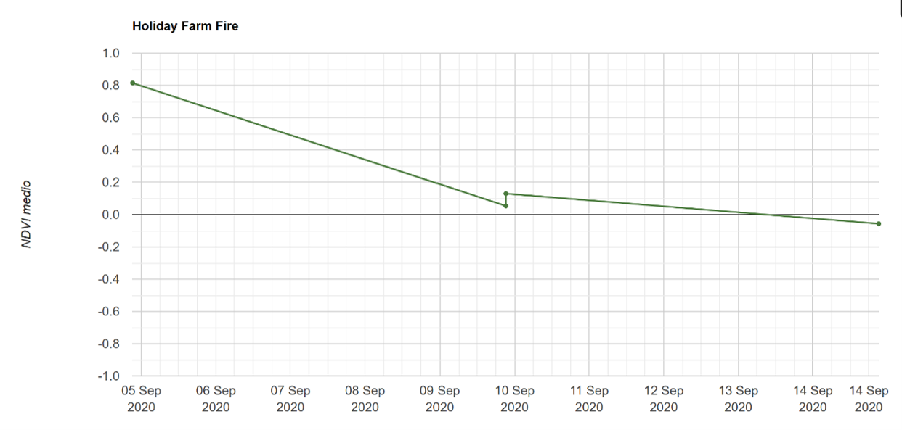

Multitemporal NDVI Analysis of Sentinel-2 Data in Google Earth Engine for Assessing the Impact of the Holiday Farm Fire (Oregon, September 2020) on Forest Vegetation
The work starts from the physical principle of NDVI: chlorophyll absorbs red light while the internal leaf structure strongly reflects near-infrared, so the normalized ratio between the two bands, computed with Sentinel-2 bands B8 and B4, becomes an indicator of vegetation density and health. The case study is the Holiday Farm Fire, one of the most destructive wildfires in Oregon’s recent history. It started on September 7, 2020, when power lines fell during a strong easterly wind event, and it burned until October 29 across Lane and Linn counties. In Google Earth Engine, a Sentinel-2 collection was filtered over two time windows, a pre-fire one (July 5 to August 30) and a post-fire one (September 1 to 20). Scenes with more than 50% cloud cover were excluded, the dataset’s radiometric scaling factor was applied, and the index was computed on the mean composite. To quantify the damage, an NDVI threshold of 0.3 was applied isolating and counting the pixels of healthy vegetation. In the pre-event image the area is dominated by dense forest, with a mean NDVI around 0.80 and interruptions only where watercourses and agricultural or urbanized areas occur. In the post-event image the fire perimeter stands out as a large patch of degraded vegetation surrounded by a ring of intact forest. The time series shows a mean NDVI of about 0.80 on September 5, a rapid and almost linear decline from the start of the fire, and a brief stabilization near 0.10 around September 10, probably due to reduced wind. By September 14 the values were already negative (about -0.10). The healthy vegetated surface fell from 803 km² to 271 km², a net loss of about 532 km², or 66% of the initial healthy vegetation.
report:
Open Complete PDF Report →codice GEE:
Open Earth Engine Script →